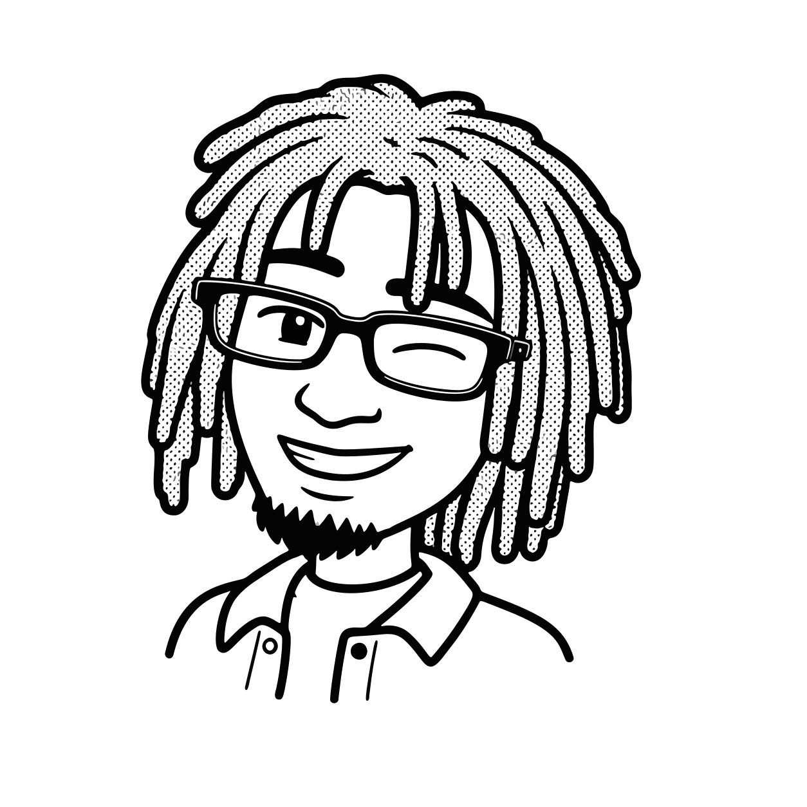

About me

How I got here, paired with some frames from my last trip home to Mombasa
1
The Accidental Beginning
I got into design by accident. In high school, I built a database interface for my final-year project, and that was the first time I realized I liked figuring out how things should work, not just that they worked. I had more tech ideas than I could explain to people, so I picked up Adobe XD from YouTube to prototype them instead, then taught myself Figma the same way, hours of videos and trial and error until it stuck. The rest of that story is one I'd rather tell you in person.
2
Beyond the Brief
Curiosity is where it all started, and it's still what drives how I work. I don't just execute a brief, I've pitched features directors hadn't even considered, ones that ended up benefiting the business directly. That same curiosity has put me in a position of trust more than once.
In the startups I've worked with, I've gone beyond design, attending conferences to pitch the product directly to potential customers, and been part of decisions on new hires. Not things most designers get pulled into, but I've never shied away from it.
3
Built for Chaos
My path through UI/UX hasn't followed one straight lane either, it's moved across industries and problems, and I've had to adapt fast each time. That's only possible because I stay genuinely stimulated by learning new things, adaptability and curiosity feed each other for me.
Swipe to see more
4
Off the Clock or When I Close Figma
Outside of work, I'm usually tweaking my designs, deep in an educational YouTube rabbit hole (astronomy, car builds, DIY home builds, tech, tweaking consoles), traveling to the coast with my camera, gaming, volunteering in handwork stuff like building with wood, or checking out whatever tech just dropped.
5
The Rest of the Story
There's more to the story than fits here, and if you just want the fuller story, reach out, I like these conversations.
Thanks for stopping by!
People I've built with